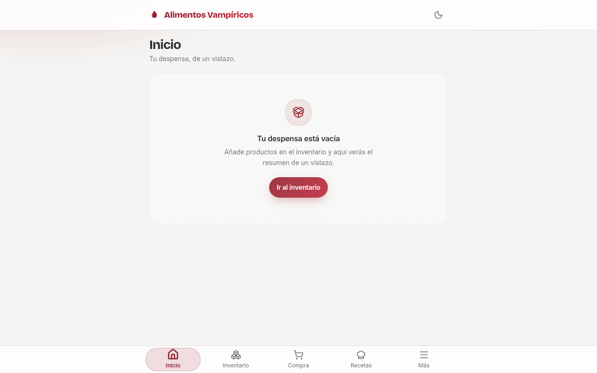
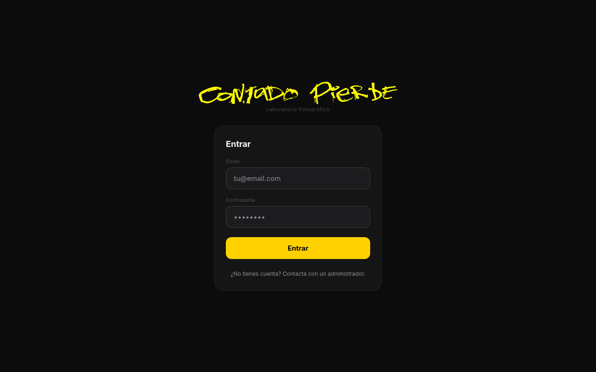
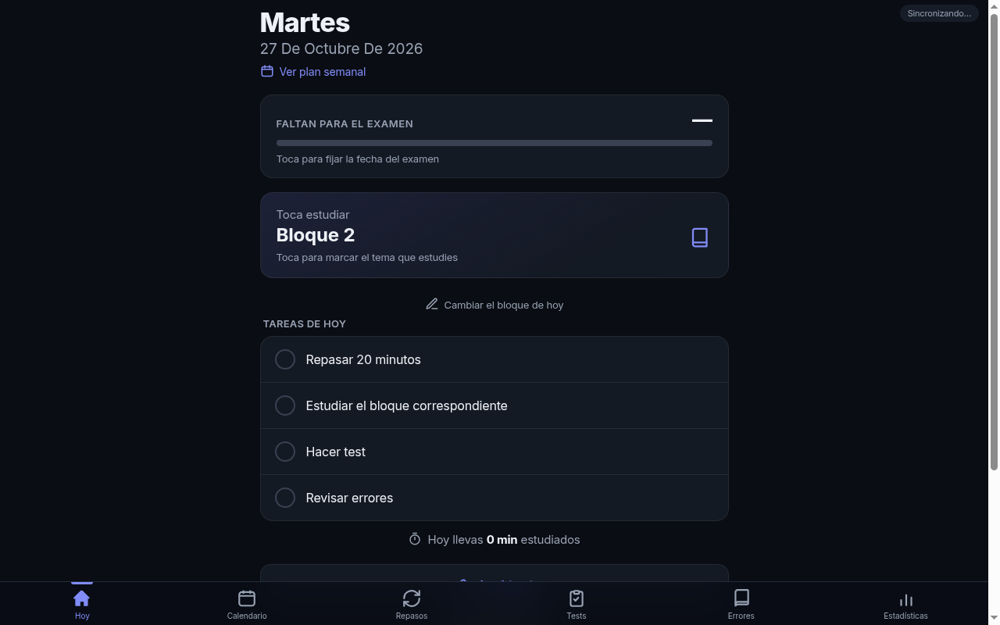
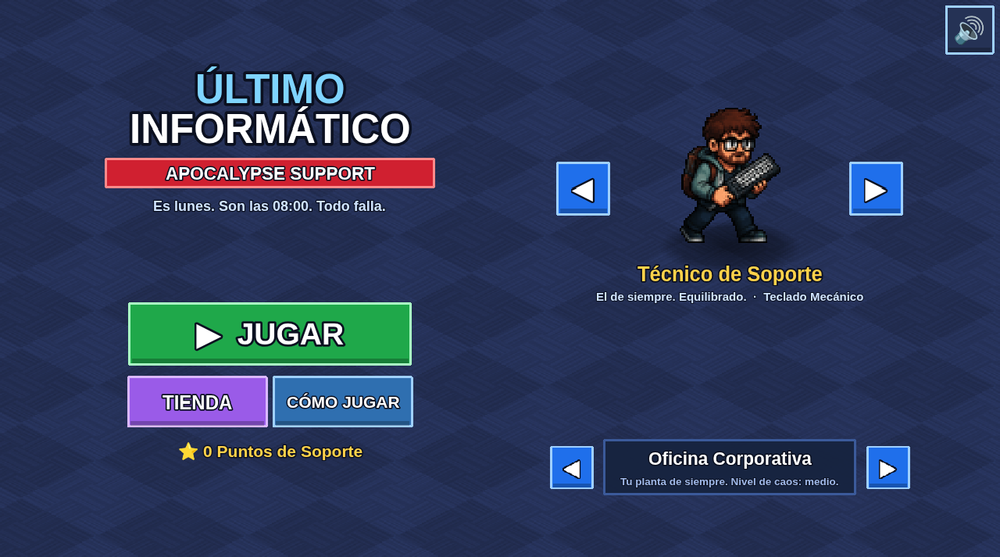

Administrador de sistemas y desarrollador. Construyo webs y aplicaciones a medida para negocios: rápidas, instalables como app y fáciles de mantener.




Juego de supervivencia para móvil y navegador: oleadas de impresoras poseídas y emails infinitos, jefes por fases que cambian hasta el género (de arcade a plataformas), armas que evolucionan y progresión permanente. Pixel art original e instalable como app.
Tu clientela reserva cita, pista o mesa desde el móvil. Rápida, instalable como app y sin cuotas de plataforma.
Inventario, gastos, planificación o seguimiento de clientes: una app sencilla que sustituye al Excel y funciona también sin internet.
Scripts y pequeños programas que quitan trabajo manual: informes, correos, organización de archivos y datos.